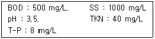
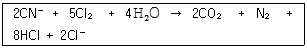
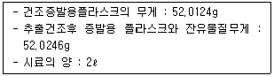

수질환경산업기사 (2005-03-06 기출문제)
1과목: 수질오염개론
1. 수산화나트륨 40g을 증류수에 녹여 2.0L로 하였을 때 규정농도(N)는?
- 0.1N
- 0.5N
- 1.0N
- 2.0N
(정답률: 알수없음)

2. 물 1ℓ에 NaOH를 0.8g 용해시킨 액의 pH는? (단, 완전해리 기준)
- 12.9
- 12.6
- 12.3
- 12.0
(정답률: 알수없음)
3. 최종BOD(BODu)가 500㎎/ℓ이고, BOD5가 400㎎/ℓ일 때 탈산소 계수(base=상용대수)는?
- 0.1/day
- 0.12/day
- 0.14/day
- 0.18/day
(정답률: 알수없음)
4. 산소에 대한 내용 중 가장 알맞는 것은?
- 생물화학적 산소요구량이 많은 수계에서는 청정수에서 성장하는 호기성 생물의 생존이 알맞다.
- 산소가 많이 존재하면 호기성 박테리아 등의 호기성 생물들이 치명적이다.
- 산소는 수계에서 생물의 양과 종류를 결정하는 중요한 요소이다.
- 조류는 햇빛이 없는 밤에는 이화작용에 의해서 산소를 생성한다.
(정답률: 알수없음)
5. 지구상에서 존재하는 담수중 빙하(만년설포함)다음으로 가장 많은량을 차지하고 있는 것은?
- 하천수
- 대기습도
- 지하수
- 토양수
(정답률: 알수없음)
6. 유량 100m3/hr이며 용량이 1000m3인 수조가 완전 혼합된다면 수조내의 BOD 250mg/L 이 5mg/L가 될 때까지의 소요시간(hr)은? (단, 1차 반응 기준, 생물학적 반응은 없다.)
- 27
- 32
- 36
- 39
(정답률: 알수없음)
7. KMnO4의 gram 당량은 얼마인가? (단 KMnO4 분자량 = 158)
- 26.3
- 31.6
- 39.5
- 52.6
(정답률: 알수없음)
8. BOD가 10,000㎎/ℓ이고 염소이온농도가 1,000㎎/ℓ인 분뇨를 희석하여 활성슬러지법으로 처리한 결과 방류수의 BOD는 40㎎/ℓ, 염소이온의 농도는 50㎎/ℓ으로 나타났다. 활성슬러지법으로 처리하기 위하여 분뇨는 몇 배 희석하였는가? (단, 염소는 생물학적 처리에서 제거되지 않음)
- 5배
- 10배
- 20배
- 25배
(정답률: 알수없음)
9. Ca2+가 60mg/L일 때 몇 meq/L인가? (단, 칼슘의 원자량: 40 )
- 0.7
- 1.5
- 3.0
- 4.0
(정답률: 알수없음)
10. 다음은 용어에 대한 설명이다. 잘못된 것은?
- 독립영양계 미생물이란 CO2를 탄소원으로 이용하는 미생물이다.
- 종속영양계 미생물이란 산화된 무기물질을 탄소원으로 이용하는 미생물을 말한다.
- 광영양계 미생물이란 이화작용에 있어 에너지를 빛으로 부터 얻는 미생물을 말한다.
- 화학영양계 미생물이란 이화작용에 있어 에너지를 화학적 산화, 환원 에너지로부터 얻는 미생물을 말한다.
(정답률: 알수없음)
11. 친수성 콜로이드에 관한 설명으로 알맞지 않은 것은?
- 틴들(Tyndall)효과가 대단히 작거나 없다.
- 현탁질(suspensoid)상태이다.
- 반응이 불활발하며, 전해질이 많이 요구된다.
- 분산매보다 표면장력이 상당히 약하다.
(정답률: 알수없음)
12. 일반적인 지하수 수질의 수직분포 내용과 가장 거리가 먼 것은? (단, 수직분포라 함은 동일 수층에서의 상·하의 수질차를 말한다.)
- 산화-환원 전위 : 상층수 - 고(高), 하층수 - 저(低)
- 유리탄산 : 상층수 - 대(大), 하층수 - 소(小)
- 알칼리도 : 상층수 - 대(大), 하층수 - 소(小)
- 염분 : 상층수 - 소(小), 하층수 - 대(大)
(정답률: 알수없음)
13. 반응조에 주입된 물감의 10%, 90%가 유출되기 까지의 시간은 t10, t90 이라할 때 Morril지수는 t90/t10 으로 나타낸다. 이상적인 Plug flow인 경우의 Morrill지수 값은?
- 1 보다 작다.
- 1 보다 크다.
- 1 이다.
- 0 이다.
(정답률: 알수없음)
14. 다음 중 동점성(kinematic viscosity)계수와 관계가 먼 것은?
- μ/ρ(점성계수/밀도)
- Stoke
- cm2/sec
- Poise
(정답률: 알수없음)
15. 다음 중 해수에 관한 설명 중 틀린 것은?
- 해수의 수온도 호수와 마찬가지로 표수층, 수온약층, 심수층으로 구분이 가능하다.
- 해수의 염분 농도는 평균 35%정도로, 표층수는 증발과 강우에 의해, 대륙연안은 하천수의 유입 때문에, 극지방에서는 얼음이 녹거나 얼 때 영향을 받는다.
- 위도에 따른 염분분포는 증발량이 강우량보다 많은 무역풍대 지역에서 염분이 가장 높고, 강우량이 많은 적도지역은 염분이 낮다.
- 해수의 영양염류 특성은 표층수에서는 영양염류의 농도가 아주 낮고, 심층수에서는 영양염류 농도가 높다.
(정답률: 알수없음)
16. Formaldehyde(CH2O) 870㎎/ℓ의 이론적인 COD는?
- 928㎎/ℓ
- 902㎎/ℓ
- 886㎎/ℓ
- 816㎎/ℓ
(정답률: 알수없음)
17. 박테리아의 경험식은 C5H7O2N 이다. 1 kg의 박테리아를 완전히 산화 시키려면 몇 kg의 산소가 필요한가? (단, 박테리아는 최종적으로 CO2, H2O, NH3 로 분해됨 )
- 2.38 kg
- 2.14 kg
- 1.84 kg
- 1.42 kg
(정답률: 알수없음)
18. 다음 중 재포기(Reaeration) 계수에 관한 설명으로 가장 옳은 것은?
- 유속이 클수록 커진다.
- 수심이 클수록 커진다.
- 재포기계수가 커지면 자정계수는 작아진다.
- 완만한 하천이 급류 하천보다 더 크다.
(정답률: 알수없음)
19. N2 의 수중용해도는 20℃에서 용액위의 압력이 1.5기압일 때 2.2 × 10-3g/L이다. 용액위의 압력이 3.0기압일 때 같은 온도에서의 용해도는? (단, 헨리법칙 적용)
- 4.4mg/L
- 3.4mg/L
- 2.4mg/L
- 1.4mg/L
(정답률: 알수없음)
20. 회복지대의 특성에 대한 것이다. 다음 중 옳지 않은 것은? (단, Whipple의 하천정화단계 기준)
- 용존산소량이 증가함에 따라 각종 가스의 발생이 증가하며 질소는 산화하여 가스형태로 전환 제거된다.
- 혐기성균이 호기성균으로 대체되며 Fungi도 조금씩 발생한다.
- 광합성을 하는 조류가 번식하며 원생동물, 윤충, 갑각류가 번식하며 큰 수중식물도 다시 나타난다.
- 바닥에서는 조개나 벌레의 유충이 번식하며 오염에 견디는 힘이 강한 은빛 담수어등의 물고기도 서식한다.
(정답률: 알수없음)
2과목: 수질오염방지기술
21. 어떤 원폐수의 수질분석 결과가 다음과 같을 때 처리방법으로 가장 적절한 것은?

- 중화 → 침전 → 생물학적 처리
- 침전 → 중화 → 생물학적 처리
- 생물학적 처리 → 침전 → 중화
- 침전 → 생물학적 처리 → 중화
(정답률: 알수없음)
22. 유량이 2.5m3/sec 이고 DO 8 mg/ℓ인 하천이 있다. DO를 최소한도로 유지하면서 오염물을 자정정화 시키기 위해 이용할 수 있는 산소의 양은? (단, 최소한도 유지되어야 하는 DO를 4mg/ℓ로 한다)
- 864 kg/day
- 907 kg/day
- 1,296 kg/day
- 1,323 kg/day
(정답률: 알수없음)
23. 폭기조 혼합액을 30분간 침전시킨뒤의 침전물의 부피는 400mℓ/ℓ이었고, MLSS 농도가 3,000mg/ℓ이였다면 침전지에서 침전 상태는?
- 정상적이다.
- 슬러지 팽화로 인하여 침전이 되지 않는다.
- 슬러지 부상(Sludge rising)현상이 발생하여 큰 덩어리가 떠 오른다.
- 슬러지가 floc을 형성하지 못하고 미세하게 떠 다닌다.
(정답률: 알수없음)
24. 완전혼합 활성슬러지 공정으로 용해성 BOD5 가 250㎎/ℓ인 유기성폐수가 처리되고 있다. 유량이 15,000m3/day이고 반응조부피가 5,000m3일 때 용적부하율은?
- 0.45kgBOD5/m3·day
- 0.55kgBOD5/m3·day
- 0.65kgBOD5/m3·day
- 0.75kgBOD5/m3·day
(정답률: 알수없음)
25. RBC(Rotating Biological Contactor)의 특징을 가장 적절히 설명한 것은?
- 부하충격에 강하고 에너지 소요가 적음
- 부하충격에 약하고 에너지 소요가 큼
- 질소산화가 잘 되지 않으며, 에너지 소요가 적음
- 질소산화가 잘 되나 에너지 소요가 큼
(정답률: 알수없음)
26. BOD 120mg/ℓ의 유기성 폐수를 살수여상법에 의해 처리한다. 최초침전지의 BOD 제거율 30%, 살수여상에 대한 BOD부하를 1.2kg/m3-d, 여상의 깊이를 1.8m로 한 경우의 여상에 대한 살수부하(m3/m2-d)는? (단, 반송은 고려하지 않음)
- 10.7 m3/m2·d
- 15.7 m3/m2·d
- 20.7 m3/m2·d
- 25.7 m3/m2·d
(정답률: 알수없음)
27. 5단계 Bardenpho공정 중 혐기조의 역할에 관한 설명으로 가장 알맞는 것은?
- 유기물제거 및 인의 방출
- 유기물제거 및 인의 과잉 섭취
- 유기물제거 및 질산화
- 유기물제거 및 탈질
(정답률: 알수없음)
28. 잉여 슬러지량이 15m3/day이고, 폭기조 부피가 300m3, [폭기조 MLSS농도(X)/반송슬러지농도(Xr)]=0.25일 때, MCRT(평균미생물 체류시간)는? (단, 최종유출수의 SS농도 고려하지 않음)
- 2 day
- 3 day
- 4 day
- 5 day
(정답률: 알수없음)
29. 30℃의 폐열수를 50m3/min씩 하천으로 배출하고 있는 시설이 있다. 하천의 유량이 2m3/sec, 수온은 15℃이라면 폐열수가 하천에 완전히 혼합되었을 경우 수온은?
- 16.7℃
- 19.4℃
- 22.6℃
- 25.2℃
(정답률: 알수없음)
30. 어떤 공장폐수내 수은함량이 20 mg/L이다. 이 폐수를 흡착법으로 처리하여 2 mg/L까지 처리하고자 할 때 요구되는 흡착제량은? (단, 흡착식은 Freundlich 등온식에 따르며 K=0.5, n=2이다.)
- 약 9 mg/L
- 약 15 mg/L
- 약 26 mg/L
- 약 34 mg/L
(정답률: 알수없음)
31. 유량이 30,000m3/day 체류시간이 2시간인 침전지의 수면적 부하는? (단, 깊이는 4m 이다.)
- 12 m3/m2·day
- 24 m3/m2·day
- 36 m3/m2·day
- 48 m3/m2·day
(정답률: 알수없음)
32. 96%의 수분을 함유하는 Sludge 100m3 을 탈수하여 수분 75%인 Sludge 를 얻었다. 탈수된 Sludge의 부피는? (단, 비중(1.0)은 변하지 않는 것으로 한다.)
- 4m3
- 8m3
- 12m3
- 16m3
(정답률: 알수없음)
33. 200mg/ℓ의 CN(시안)을 함유한 폐수 50m3을 알칼리 염소법으로 처리하는데 필요한 이론적인 염소량(Cl2 , kg)은? (단, 원자량은 Cl : 35.5)

- 46.3 kg
- 52.7 kg
- 68.3 kg
- 73.8 kg
(정답률: 알수없음)
34. 일반적으로 칼슘, 알루미늄, 마그네슘, 철, 바륨 등의 수산화물에 공침시켜 제거하며 이중에 철의 수산화물인 Fe(OH)3의 플록에 흡착시켜 공침제거하는 방법이 우수한 것으로 알려진 오염물질로 가장 적절한 것은?
- 카드뮴
- 수은
- 납
- 비소
(정답률: 알수없음)
35. 폐수유량이 3000m3/d, 부유고형물의 농도가 200㎎/ℓ이다. 공기부상시험에서 공기/고형물비가 0.06 일 때 최적의 부상을 나타내며 이때 공기용해도는 18.7㎖/ℓ이고 공기용존비가 0.5이다. 부상조에서 요구되는 압력은? (단, 비순환식 기준)
- 약 3.0atm
- 약 3.5atm
- 약 4.0atm
- 약 4.5atm
(정답률: 알수없음)
36. BOD 200mg/ℓ, 폐수량 1,000m3/일을 처리하기 위하여 200m3의 폭기조를 설치하였으나 처리수의 수질이 악화되어 폭기조의 용량을 늘리기로 하였다. 적정 BOD 부하를 유지하기 위하여 늘려야할 폭기조 용적은? (단, 적정 BOD 부하 = 0.5kg/m3-일 이다.)
- 200 m3
- 150 m3
- 100 m3
- 80 m3
(정답률: 알수없음)
37. 슬러지의 함수율 90%, 슬러지의 고형물량중 유기물 함량 70% 이다. 투입량 100Kℓ/일이며 소화후 유기물의 5/7가 제거된다. 소화된 sludge의 양은? (단, 소화슬러지의 함수율은 75%, %는 부피기준이며, 고형물의 비중은 1.0로 가정한다.)
- 15 m3
- 20 m3
- 25 m3
- 30 m3
(정답률: 알수없음)
38. 여과성능의 영향인자인 균등계수에 관한 설명으로 틀린 것은?
- 균등계수가 1에 가까울수록 입도분포가 양호하다고 간주한다.
- 균등계수가 클수록 공극률이 커진다.
- 균등계수가 클수록 여과저항이 증가하게 된다.
- 균등계수가 클수록 유효경이 점차 증가될 가능성이 높아진다.
(정답률: 알수없음)
39. 표준상태에서 300g의 glucose(C6H12O6)로부터 발생 가능한 CH4 가스량은? (단, 혐기성분해 기준)
- 37 L
- 75 L
- 112 L
- 149 L
(정답률: 알수없음)
40. NH4+가 미생물에 의해 NO2-로 산화될 때 pH의 변화는?
- 증가한다.
- 감소한다.
- 변화없다.
- 증가하다 감소한다.
(정답률: 알수없음)
3과목: 수질오염공정시험방법
41. 수심 3m, 폭 7m인 장방형 개수로에 평균유속 1.0 m/sec로 폐수를 흘려보낼 때 이 폐수의 유량은?
- 25m3/분
- 145m3/분
- 650m3/분
- 1,260m3/분
(정답률: 알수없음)
42. 수소이온농도 측정시 사용되는 pH 표준액중 pH 7에 가장 가까운 값을 나타내는 것은?
- 프탈산염표준액(0.⑤M)
- 붕산염 표준액(0.01M)
- 탄산염 표준액(0.025M)
- 인산염 표준액(0.025M)
(정답률: 알수없음)
43. Jar test의 결과 폐수 500㎖에 대하여 0.1%의 Alum용액 15㎖를 첨가하였을 때 침전율이 가장 좋았다. 폐수에다 몇 ㎎/ℓ의 Alum을 주입하여야 되는가?
- 50
- 30
- 15
- 10
(정답률: 알수없음)
44. 원자흡광광도법에 관한 다음 기술 중 틀린 것은?
- 검량선은 적어도 3종류 이상의 표준시료용액에 대한 흡광도를 측정하여 표준물질 농도는 가로대에 흡광도는 세로대에 취하여 그래프를 그려서 작성한다.
- 원자흡광광도법에 쓰이는 혼합가스는 수소-공기, 아세틸렌-공기, 아세틸렌-아산화질소 및 프로판-공기가 가장 널리 이용된다.
- 시료원자화부는 시료를 원자증기화 하기 위한 시료원자화 장치와 원자증기 중에 빛을 투과시키기 위한 광학계로 구성되어 있다.
- 분광부의 분광기 슬릿(Slit)폭은 목적하는 분석선을 분리해 낼 수 있는 범위내에서 되도록 좁게 하는 것이 좋다.
(정답률: 알수없음)
45. 디페닐카르바지드를 작용시켜 생성되는 적자색의 착화합물의 흡광도를 측정하여 정량하는 항목은?
- 카드뮴
- 6가 크롬
- 비소
- 니켈
(정답률: 알수없음)
46. 0.1N-KMnO4용액 2.5ℓ을 만들려면 KMnO4몇 g 이 필요한가? (단, KMnO4 분자량 158)
- 6.2 g
- 7.9 g
- 8.5 g
- 9.7 g
(정답률: 알수없음)
47. 식물성 플랑크톤(조류)실험에 관한 설명으로 알맞지 않은 것은?
- 정성시험의 목적은 식물성 플랑크톤의 성분을 분석하는 것이다.
- 정량시험의 목적은 식물성 플랑크톤의 개체수를 조사하는 것이다.
- 기기는 광학현미경 혹은 위상차현미경(×1000 배율), 혈구계수기, 슬라이드글라스등이 필요하다.
- 채수기를 이용하여 일정량의 시료를 채취하여 냉암소에서 보관하면서 운반하고 즉시 시험한다.
(정답률: 알수없음)
48. 이온크로마토그래피법에 관한 설명 중 알맞은 것은?
- 시료 주입량은 보통 30∼50㎕ 정도이다.
- 물 시료중 음이온의 정성 및 정량분석에 이용된다.
- 기본구성은 일반적으로 유량조절기, 시료분리기, 액송펌프, 검출기 및 기록계로 구성되어 있다.
- 검출기는 양이온분석에는 일반적으로 전기화학적 검출기가 사용된다.
(정답률: 알수없음)
49. 측정시료 채취시 유리용기만을 사용해야 하는 측정 항목은?
- 불소
- 유기인
- 알킬수은
- 시안
(정답률: 알수없음)
50. 다음 내용 중 틀린 것은?
- 용액농도를 '%' 로만 표시할 때는 일반적으로 용액 100㎖중의 성분무게(g)를 말한다.
- '기밀용기'라 함은 취급 또는 저장하는 동안에 밖으로부터의 공기, 다른 가스가 침입하지 아니하도록 보호하는 용기를 말한다.
- '정확히 단다'라 함은 규정된 양의 시료를 취하여 분석용 저울로 0.1mg 까지 다는 것을 말한다.
- '진공'이라 함은 따로 규정이 없는 한 15mmH2O 이하를 말한다.
(정답률: 알수없음)
51. 납 정량법의 디티존 흡광광도법을 설명한 것중 틀린 것은?
- 납이온이 시안화칼륨 공존하에 알칼리성에서 디티존과 반응한다.
- 납착염의 흡광도를 520nm에서 측정한다.
- 정량범위는 0.001~0.04mg이다.
- 표준편차율은 1~3%이다.
(정답률: 알수없음)
52. 노말헥산 추출물질 시험에서 다음과 같은 결과를 얻었다. 이 때 노말헥산 추출물질양은?

- 6.1 mg/ℓ
- 7.8 mg/ℓ
- 10.2 mg/ℓ
- 15.6 mg/ℓ
(정답률: 알수없음)
53. 흡광광도측정에서 투과퍼센트가 50% 일 때 흡광도는?
- 0.2
- 0.3
- 0.4
- 0.5
(정답률: 알수없음)
54. 수질오염 공정시험법에서 수질중의 인산염인을 측정할 수 있는 시험방법은?
- 아스코르빈산환원법
- 에브럴 - 노리스법
- 부루신법
- 카드뮴 아말감환원법
(정답률: 알수없음)
55. 수질오염공정시험방법상 총대장균군 시험방법과 가장 거리가 먼 것은?
- 최적확수 시험법
- 막여과 시험방법
- 평판 집락시험방법
- 확정계수 시험방법
(정답률: 알수없음)
56. 유기물 함량이 비교적 높지 않고 금속의 수산화물, 산화물, 인산염 및 황화물을 함유하는 시료의 전처리 방법으로 가장 알맞는 것은?
- 질산 - 황산에 의한 분해
- 질산 - 과염소산에 의한 분해
- 질산 - 염산에 의한 분해
- 질산 - 불화수소산에 의한 분해
(정답률: 알수없음)
57. 100℃의 산성 KMnO4법에 의한 화학적 산소요구량(COD)측정에 필요한 시약과 가장 거리가 먼 것은?
- 황산은 분말
- 수산화나트륨
- 황산
- 수산나트륨
(정답률: 알수없음)
58. 시료보존에 있어서 즉시시험을 하지 못할 경우, 보전방법으로 '4℃ 보관'에 해당하지 않는 측정항목은?
- 전기전도도
- 음이온계면활성제
- 화학적산소요구량
- 6가 크롬
(정답률: 알수없음)
59. 가스크로마토그래피법에서 사용되는 검출기 중 인 또는 황화합물을 선택적으로 검출할 수 있는 것으로 가장 알맞는 것은?
- 열전도도 검출기(TCD)
- 불꽃이온화 검출기(FID)
- 전자포획형 검출기(ECD)
- 불꽃광도형 검출기(FPD)
(정답률: 알수없음)
60. 공장폐수 및 하수유량측정방법중 오리피스에 관한 설명으로 틀린 것은?
- 설치에 비용이 적게 들고 비교적 유량측정이 정확하여 얇은 판오리피스가 널리 이용되고 있다.
- 단면이 축소되는 목부분을 조절하므로써 유량이 조절된다.
- 오리피스 단면에서 수두손실이 비교적 적게 발생되는 장점이 있다.
- 오리피스를 사용하는 방법은 노즐과 벤튜리미터와 같다.
(정답률: 알수없음)
4과목: 수질환경관계법규
61. 환경부장관이 총량규제를 하고자 할 때에 고시하여야 할 사항이 아닌 것은?
- 규제오염물질
- 규제기준농도
- 오염물질의 저감계획
- 규제구역
(정답률: 알수없음)
62. 수질환경보전법에 사용되는 용어의 정의로 틀린 것은?
- 폐수 : 사람의 건강, 재산에 직·간접으로 위해를 줄 우려가 있어 그대로 사용할 수 없는 물을 말한다.
- 수질오염물질 : 수질오염의 요인이 되는 물질로서 환경부령으로 정하는 것을 말한다.
- 수질오염방지시설 : 폐수배출시설로 부터 배출되는 수질오염물질을 제거하거나 감소시키는 시설로서 환경부령으로 정하는 것을 말한다.
- 공공수역 : 하천, 호소, 항만, 연안해역 기타 공공용에 사용되는 수역과 이에 접속하여 공공용에 사용되는 환경부령으로 정하는 수로를 말한다.
(정답률: 알수없음)
63. 수질환경보전법에서 규정하고 있는 공공수역중 환경부령으로 정하는 수로가 아닌 것은?
- 운하
- 농업용수로
- 하수관거
- 상수관거
(정답률: 알수없음)
64. 수질환경보전법상 '특정수질유해물질'이 아닌 것은?
- 트리클로로에틸렌
- 불소화합물
- 구리 및 그 화합물
- 페놀류
(정답률: 알수없음)
65. 낚시제한구역안에서 제한사항을 위반하여 낚시 한 자에 대한 행정처분기준으로 적절한 것은?
- 200만원이하의 벌금
- 100만원이하의 벌금
- 100만원이하의 과태료
- 50만원이하의 과태료
(정답률: 알수없음)
66. 사업장 규모에 따른 종별 구분이 잘못 된 것은?
- 1일 폐수 배출량 10,000m3 - 1종사업장
- 1일 폐수 배출량 2,500m3 - 2종사업장
- 1일 폐수 배출량 600m3 - 3종사업장
- 1일 폐수 배출량 150m3 - 4종사업장
(정답률: 알수없음)
67. 일일기준초과배출량 산정시 적용되는 일일유량산정방법은 [일일유량 = 측정유량 × 일일조업시간]이다. 일일조업시간에 관한 내용으로 알맞는 것은?
- 일일조업시간은 측정하기 전 최근 조업한 60일간의 배출시설의 조업시간 평균치로서 시간(HR)으로 표시한다.
- 일일조업시간은 측정하기 전 최근 조업한 60일간의 배출시설의 조업시간 평균치로서 분(min)으로 표시한다.
- 일일조업시간은 측정하기 전 최근 조업한 30일간의 배출시설의 조업시간 평균치로서 시간(HR)으로 표시한다.
- 일일조업시간은 측정하기 전 최근 조업한 30일간의 배출시설의 조업시간 평균치로서 분(min)으로 표시한다.
(정답률: 알수없음)
68. 관계 공무원의 출입, 검사를 거부, 방해 또는 기피한 폐수 무방류배출시설을 설치, 운영하는 사업자에 대한 행정처분으로 적절한 것은?
- 100만원 이하의 벌금
- 200만원 이하의 벌금
- 1년 이하의 징역 또는 500만원 이하의 벌금
- 3년 이하의 징역 또는 1500만원 이하의 벌금
(정답률: 알수없음)
69. 수질환경기준 중 하천 전수역에서 사람의 건강보호를 위해 검출되어서는 안되는 오염물질은?
- 카드뮴
- 유기인
- 비소
- 납
(정답률: 알수없음)
70. 환경부장관이 호소수질보전구역을 지정 또는 변경한 때에 고시할 사항과 가장 거리가 먼 것은?
- 호소수질보전구역의 활용
- 호소수질보전구역의 면적
- 호소수질보전구역의 위치
- 호소수질보전구역의 명칭
(정답률: 알수없음)
71. 시·도지사등은 오염물질 배출량 등의 확인을 위한 오염도 검사를 완료한 날부터 몇 일내에 사업자에게 배출농도 및 일일유량에 관한 사항을 통보해야 하는가?
- 7일
- 10일
- 15일
- 30일
(정답률: 알수없음)
72. 하천의 환경기준 중 상수원수 1급의 BOD 기준은?
- 1 mg/L 이하
- 2 mg/L 이하
- 3 mg/L 이하
- 4 mg/L 이하
(정답률: 알수없음)
73. 초과부과금부과대상 오염물질이 아닌 것은?
- 총인
- 벤젠
- 트리클로로에틸렌
- 아연 및 그 화합물
(정답률: 알수없음)
74. 현재기준으로 폐수종말처리시설방류수의 COD(mg/L) 수질기준으로 적절한 것은? (단, 농공단지의 폐수종말처리시설 제외)
- 20㎎/L이하
- 30㎎/L이하
- 40㎎/L이하
- 50㎎/L이하
(정답률: 알수없음)
75. 개선명령을 받은자가 천재지변 등으로 인하여 규정기간 이내에 명령받은 조치를 완료할 수 없는 경우에 그 기간이 종료되기 전에 환경부장관에게 개선기간 연장신청을 할 수 있는데 그 연장기간은?
- 1월내
- 3월내
- 6월내
- 12월내
(정답률: 알수없음)
76. 조업정지처분에 갈음하여 처분할 수 있는 과징금의 최대 액수는?
- 3억원
- 2억원
- 1억원
- 5천만원
(정답률: 알수없음)
77. 다음의 위임업무 보고사항 중 연간 보고 횟수가 가장 많은 것은?
- 폐수위탁, 자가처리현황 및 처리실적
- 폐수처리업에 대한 등록, 지도단속실적 및 처리실적현황
- 배출업소의 지도, 점검 및 행정처분실적
- 과징금 부과실적
(정답률: 알수없음)
78. 수질환경기준에서 생활환경 III등급의 이용목적별 적용대상을 가장 적절히 나타낸 것은?
- 수영용수
- 농업용수
- 수산용수 3급
- 공업용수 1급
(정답률: 알수없음)
79. 청정지역과 가지역의 기본부과금의 지역별 부과계수로 맞는 것은?
- 모두 1
- 청정지역 1.5, 가지역 1
- 청정지역 2, 가지역 1.5
- 모두 1.5
(정답률: 알수없음)
80. 수질오염방지시설중 화학적처리시설이 아닌 것은?
- 살균시설
- 소각시설
- 안정화시설
- 침전물 개량시설
(정답률: 알수없음)
40g / 40g/mol = 1 mol
증류수 2.0L에 1 mol의 수산화나트륨을 녹인 경우, 용액의 몰수는 다음과 같습니다.
1 mol / 2.0 L = 0.5 mol/L
따라서, 이 용액의 규정농도(N)는 0.5N입니다.